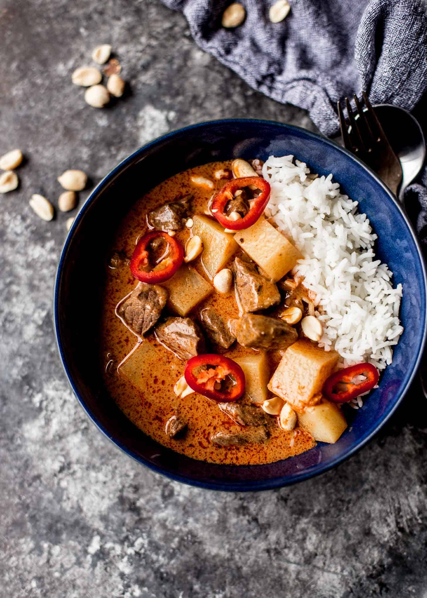

Massaman Curry

A delicious Thai curry with a rich blend of flavors. One of my favorites.
Ingredients
- 1 1/2 cups coconut cream
- 2 tablespoons massaman curry paste
- 200 grams beef/chicken/lamb (3 cm chunks)
- 50 grams onions (3 cm chunks)
- 200 grams boiled potatoes
- 1 1/2 cups coconut milk
- 1 tablespoon palm sugar (or brown sugar)
- 1 1/2 to 2 tablespoons fish sauce
- 1-2 tablespoons tamarind puree
- 4 roasted cardamon pods (crushed)
- 2 bay leaves
- 2-4 cm cinnamon
- 2 tablespoons roasted peanuts
Steps
- Boil 1 cup of coconut cream in wok over low heat until some oil rises to the surface. Then add curry paste and fry for 1 min until fragrant.
- Add meat, onion and potato. Keep stirring until meat is nearly cooked.
- Add coconut milk and bring to boil.
- Add palm sugar, fish sauce, tamarind, cardamon, bay leaves and cinnamon.
- Simmer on low until meat is tender.
- Add remaining coconut cream and peanuts.
- Cover with lid and simmer for 2-3 minutes.
- Serve with rice.